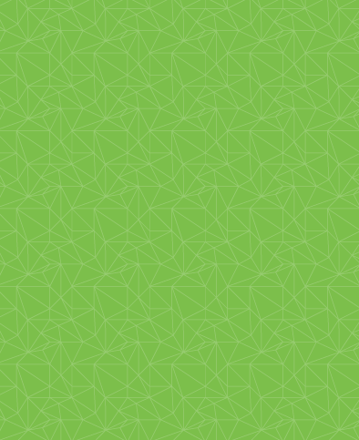

<app-menu></app-menu>
<router-outlet></router-outlet>
      
    <!-- <button mat-icon-button class="example-icon" aria-label="Example icon-button with menu icon">
      <mat-icon>menu</mat-icon>
    </button> -->